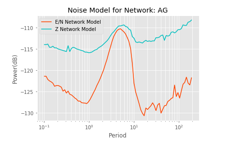

pycheron.psd.noise.networkNoiseModel¶
-
networkNoiseModel(st, plot=False, fname=None, evalresp=None, station=None, network=None, channel=None, location=None, time=None, session=None, database=None, logger=None)[source]¶ Calculates Network Noise Model for network.
Parameters: - st (obspy.core.stream.Stream or pycheron.db.sqllite_db.Database) – Stream of data that includes stations from network. Recommended that length > 1 Week OR Database object
- plot (bool) – To plot or not (Default = False)
- fname (bool) – If plotting at want to save the output
- evalresp (numpy.ndarray) – IRIS evalresp file or array
- network (str) – If using database, must supply the network
- station (str) – If using database, and want to use specific stations for noise model
- channel (str) – If using database, and want to use specific channels for noise model
- session (str) – specific session in database
- database (pycheron.db.sqllite_db.Database) – Database object to save to
- logger (pycheron.util.logger.Logger) – Logger object
- location (str) – If using database, and want to use specific location for noise model
Returns: - Dataframe of Network Noise Model from all **E/**N Stations
- Dataframe of Network Noise Model from all **Z Stations
Return type: dict
Example
from pycheron.psd.noise.networkNoiseModel import networkNoiseModel from obspy import UTCDateTime from obspy.clients.fdsn import Client client = Client("IRIS") t = UTCDateTime("2017-09-10T00:00:00") te = UTCDateTime("2017-09-11T00:00:00") st = client.get_waveforms("AG", "*", "*", "*", t, te) model = networkNoiseModel(st)
Plotting
import matplotlib.pyplot as plt # uses output from above example plt.semilogx(model["enModel"], 'orangered', label="E/N Network Model") plt.semilogx(model["zModel"], 'c', label="Z Network Model") plt.xlabel("Period") plt.ylabel("Power(dB)") plt.title("Noise Model for Network: " + st[0].get_id().split(".")[0]) plt.grid(True, "both", "both") plt.legend()